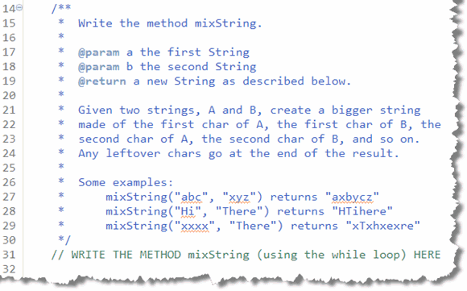
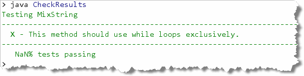
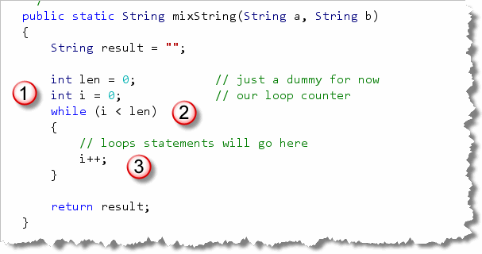
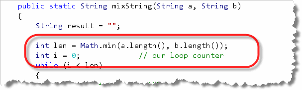
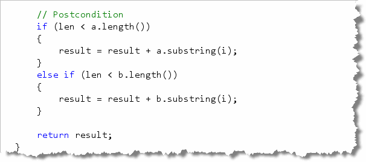

Even though Java has the for
loop, which is specially designed for writing counter-controlled
loops, you can actually use the simpler, more general purpose
while loop to solve the same problems. It's just not
as convenient as using for.
Mixing Strings
To get some practice using the while loop, open
MixString.java in this chapter's code folder,
and then locate the problem statement at the top of the
file:

As you can see, themixString() method has two
input Strings, a and b,
and your method is going to produce a new String
with the characters from a and b
interleaved. If one input String is
larger than the other, then the extra characters will appear
at the end of the output String.
While you could solve this problem using the for
loop, the purpose of the assignment is to learn how to use the
while loop. Because of that, the test program actually
has to read your source code to see if you are using while
instead of for. That means you can't have any
for loops inside
your method, even if they are commented out.
Solving the Problem
So, where do we start, now that we're working with while
loops instead of for loops?

We Start With the Method Skeleton!

Once you have the header, the results and the return
expression, you can run your tests.

HMMM. That's kind of annoying. It looks like we really do need to use thewhile loop, or the test program
won't even check the program.
The while Loop Skeleton
No worries though. Just like we had a standard loop skeleton for
a for loop, we can do the same thing for while.
(You'll find this skeleton in Section 7.4—Counted While Loops) Applying that to
the mixString problem gives us this:

In this case I:- Create a "dummy" variable for ending the loop.
- Create a counter before the loop starts.
- Compare the counter to the loop bounds in the
whileconditional expression. - Update my counter at the end of each loop repetition.
A textbook example. Now let's think about our loop plan and see how we actually solve the problem.
What is the Loop's Bounds?
In this problem, we want to interleave the characters from
two Strings, but each may have a different length.
That means that our loop will have to stop when the
shorter String has been processed.
We can use that information to set our bounds variable
len to the length of the shorter String,
like this:

Now, the loop will stop at the right place.We've already taken care of the bounds precondition and advancing the loop by using our ready-made while-loop skeleton. So let's move on to the goal.
The Loop Operations
Our generic function skeleton took care of Step 4 in our standard loop-development plan (creating variables to hold the loop's output.) Let's move on to Step 5: the loop operations.
What we want to do in each repetition, is place one character
from a in the output, followed by the character
at the same index position from b. We can do that
easily by using this code:
 At this point, our method should pass all of the tests
where the input
At this point, our method should pass all of the tests
where the input Strings are both the same length.
Unfortunately, the fellow who wrote the tests was especially
devious, and so only 3 of the 13 tests actually have equal-length
parameters. Bummer.
The Loop Post-Conditions
That means, to solve this problem, we'll have to think of the post-conditions to the loop. Remember, a loop ends because its bounds are reached, not because its goal has been accomplished.
How can we tell if our loop has accomplished all we desired?
By using the if statement to check if conditions
are as we expect. In this case, if the variable len
is less than the length of either input String,
then we still have some characters left over. We need to
"paste" them onto the end of the output like this:

Notice that because we're using a countedwhile loop
instead of a for loop, that the counter
i is still available after the loop ends. That
means we can use i to extract the rest of either
a or b if necessary.